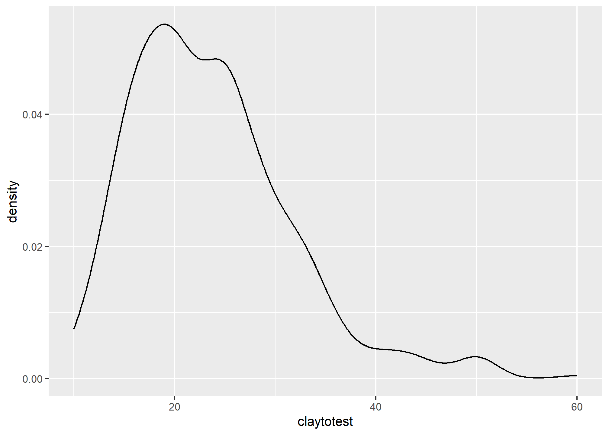
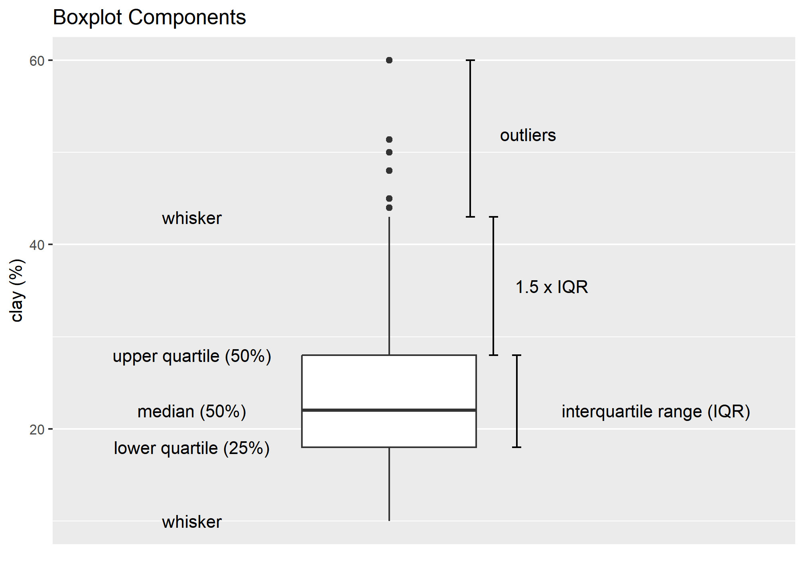
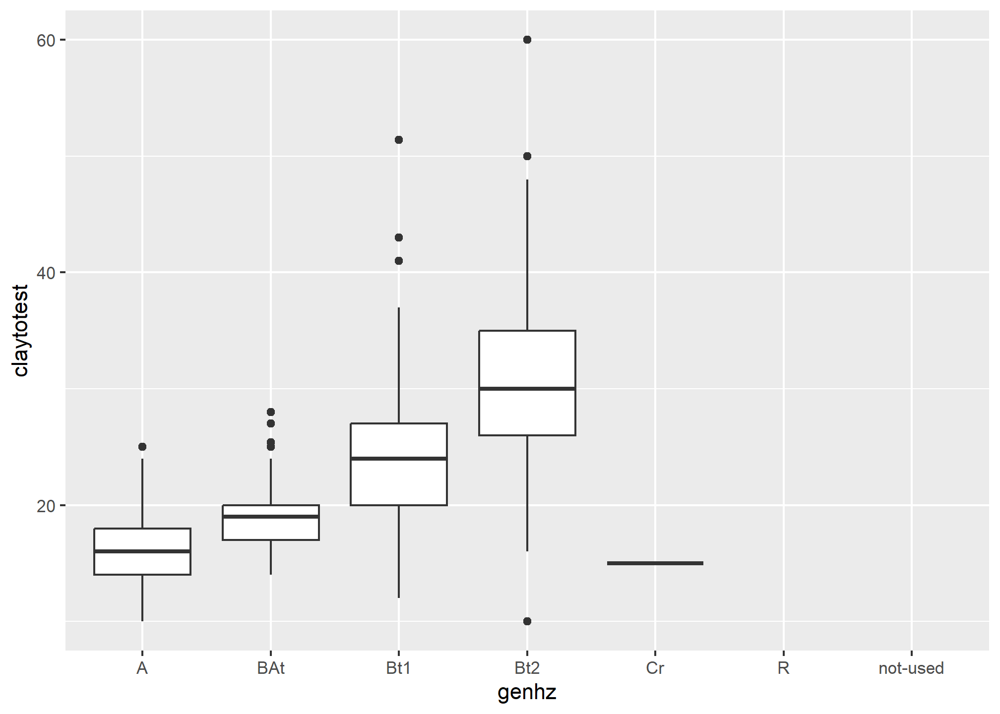
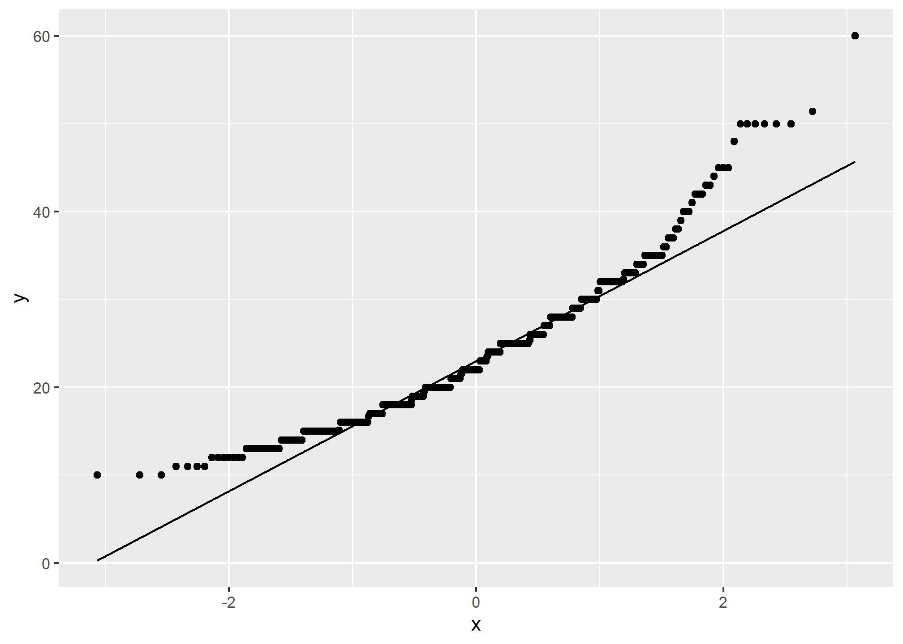
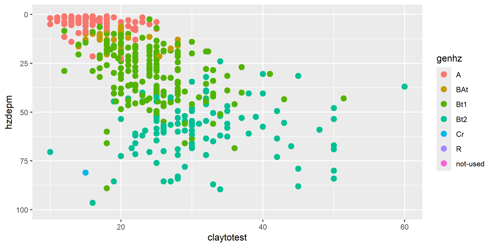
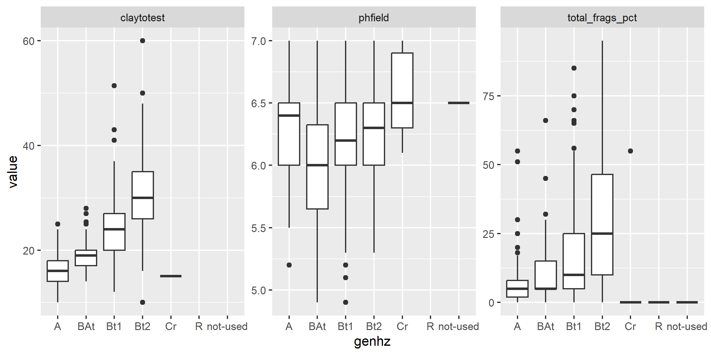
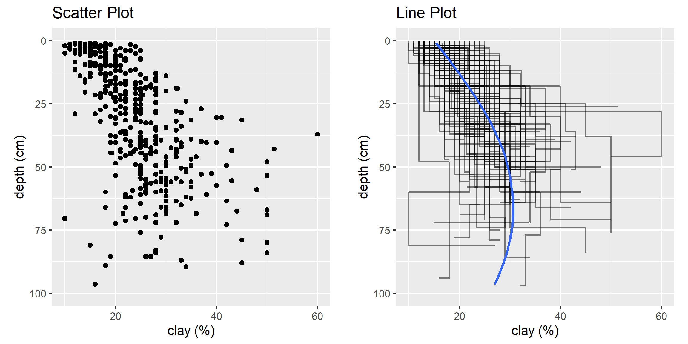
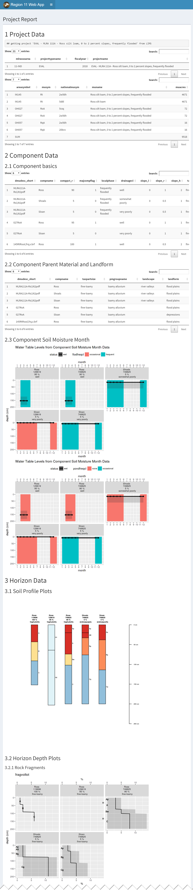
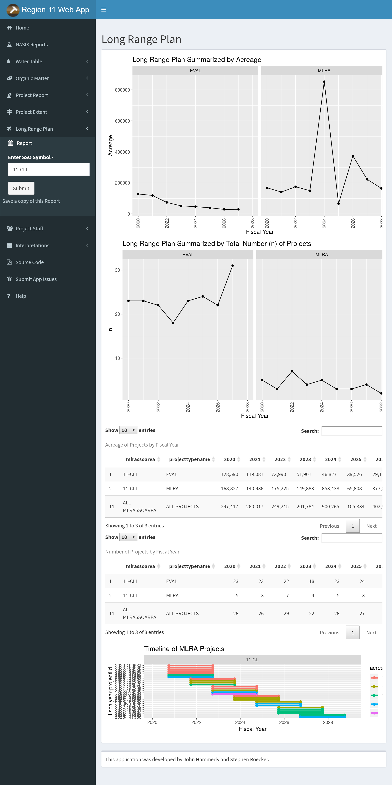

Chapter 3 Exploratory Data Analysis

Before embarking on developing statistical models and generating predictions, it is essential to understand your data. This is typically done using conventional numerical and graphical methods. John Tukey ((Tukey 1977)) advocated the practice of exploratory data analysis (EDA) as a critical part of the scientific process.
“No catalog of techniques can convey a willingness to look for what can be seen, whether or not anticipated. Yet this is at the heart of exploratory data analysis. The graph paper and transparencies are there, not as a technique, but rather as a recognition that the picture examining eye is the best finder we have of the wholly unanticipated.”
Fortunately, we can dispense with the graph paper and transparencies and use software that makes routine work of developing the ‘pictures’ (i.e., graphical output) and descriptive statistics needed to explore our data.
3.1 Objectives (Exploratory Data Analysis)
- Review methods for estimating Low, RV, and High values
- Review different methods for visualizing soil data
- Review data transformations
3.2 Statistics
Descriptive statistics include:
- Mean - arithmetic average
- Median - middle value
- Mode - most frequent value
- Standard Deviation - variation around the mean
- Interquartile Range - range encompasses 50% of the values
- Kurtosis - peakedness of the data distribution
- Skewness - symmetry of the data distribution
Graphical methods include:
- Histogram - a bar plot where each bar represents the frequency of observations for a given range of values
- Density estimation - an estimation of the frequency distribution based on the sample data
- Quantile-quantile plot - a plot of the actual data values against a normal distribution
- Box plots - a visual representation of median, quartiles, symmetry, skewness, and outliers
- Scatter plots - a graphical display of one variable plotted on the x axis and another on the y axis
- Radial plots - plots formatted for the representation of circular data
3.3 Data Inspection
Before you start an EDA, you should inspect your data and correct all typos and blatent errors. EDA can then be used to identify additional errors such as outliers and help you determine the appropriate statistical analyses. For this chapter we’ll use the loafercreek dataset from the CA630 Soil Survey Area.
library(dplyr)
# Load from the the loakercreek dataset
data("loafercreek", package = "soilDB")
# Extract the horizon table
h <- aqp::horizons(loafercreek)
# Construct generalized horizon designations
n <- c("A",
"BAt",
"Bt1",
"Bt2",
"Cr",
"R")
# REGEX rules
p <- c("A",
"BA|AB",
"Bt|Bw",
"Bt3|Bt4|2B|C",
"Cr",
"R")
# Compute genhz labels and add to loafercreek dataset
h$genhz <- aqp::generalize.hz(h$hzname, n, p)
# Examine genhz vs hznames (wide format)
table(h$genhz, h$hzname)##
## 2BC 2BCt 2Bt1 2Bt2 2Bt3 2Bt4 2Bt5 2CB 2CBt 2Cr 2Crt 2R A A1 A2 AB ABt Ad Ap B BA
## A 0 0 0 0 0 0 0 0 0 0 0 0 97 7 7 0 0 1 1 0 0
## BAt 0 0 0 0 0 0 0 0 0 0 0 0 0 0 0 1 0 0 0 0 31
## Bt1 0 0 0 0 0 0 0 0 0 0 0 0 0 0 0 0 2 0 0 0 0
## Bt2 1 1 3 8 8 6 1 1 1 0 0 0 0 0 0 0 0 0 0 0 0
## Cr 0 0 0 0 0 0 0 0 0 4 2 0 0 0 0 0 0 0 0 0 0
## R 0 0 0 0 0 0 0 0 0 0 0 6 0 0 0 0 0 0 0 0 0
## not-used 0 0 0 0 0 0 0 0 0 0 0 0 0 0 0 0 0 0 0 1 0
##
## BAt BC BCt Bt Bt1 Bt2 Bt3 Bt4 Bw Bw1 Bw2 Bw3 C CBt Cd Cr Cr/R Crt H1 Oi R Rt
## A 0 0 0 0 0 0 0 0 0 0 0 0 0 0 0 0 0 0 0 0 0 0
## BAt 8 0 0 0 0 0 0 0 0 0 0 0 0 0 0 0 0 0 0 0 0 0
## Bt1 0 0 0 8 93 88 0 0 10 2 2 1 0 0 0 0 0 0 0 0 0 0
## Bt2 0 4 16 0 0 0 47 8 0 0 0 0 6 6 1 0 0 0 0 0 0 0
## Cr 0 0 0 0 0 0 0 0 0 0 0 0 0 0 0 49 0 20 0 0 0 0
## R 0 0 0 0 0 0 0 0 0 0 0 0 0 0 0 0 1 0 0 0 40 1
## not-used 0 0 0 0 0 0 0 0 0 0 0 0 0 0 0 0 0 0 1 24 0 0# Examine matching pairs (long format)
h %>% group_by(genhz, hzname) %>% count()## # A tibble: 43 x 3
## # Groups: genhz, hzname [43]
## genhz hzname n
## <fct> <chr> <int>
## 1 A A 97
## 2 A A1 7
## 3 A A2 7
## 4 A Ad 1
## 5 A Ap 1
## 6 BAt AB 1
## 7 BAt BA 31
## 8 BAt BAt 8
## 9 Bt1 ABt 2
## 10 Bt1 Bt 8
## # ... with 33 more rowsAs noted in Chapter 1, a visual examination of the raw data is possible by clicking on the dataset in the environment tab, or via commandline:
View(h) This view is fine for a small dataset, but can be cumbersome for larger ones. The summary() function can be used to quickly summarize a dataset however, even for our small example dataset, the output can be voluminous. Therefore in the interest of saving space we’ll only look at a sample of columns.
h %>%
select(genhz, clay, total_frags_pct, phfield, effclass) %>%
summary()## genhz clay total_frags_pct phfield effclass
## A :113 Min. :10.00 Min. : 0.00 Min. :4.90 Length:626
## BAt : 40 1st Qu.:18.00 1st Qu.: 0.00 1st Qu.:6.00 Class :character
## Bt1 :206 Median :22.00 Median : 5.00 Median :6.30 Mode :character
## Bt2 :118 Mean :23.63 Mean :13.88 Mean :6.18
## Cr : 75 3rd Qu.:28.00 3rd Qu.:20.00 3rd Qu.:6.50
## R : 48 Max. :60.00 Max. :95.00 Max. :7.00
## not-used: 26 NA's :167 NA's :381The summary() function is known as a generic R function. It will return a preprogrammed summary for any R object. Because h is a data frame, we get a summary of each column. Factors will be summarized by their frequency (i.e., number of observations), while numeric or integer variables will print out a five number summary, and characters simply print their length. The number of missing observations for any variable will also be printed if they are present. If any of these metrics look unfamiliar to you, don’t worry we’ll cover them shortly.
When you do have missing data and the function you want to run will not run with missing values, the following options are available:
Exclude all rows or columns that contain missing values using the function
na.exclude(), such ash2 <- na.exclude(h). However this can be wasteful because it removes all rows (e.g., horizons), regardless if the row only has 1 missing value. Instead it’s sometimes best to create a temporary copy of the variable in question and then remove the missing variables, such asclay <- na.exclude(h$clay).Replace missing values with another value, such as zero, a global constant, or the mean or median value for that column, such as
h$clay <- ifelse(is.na(h$clay), 0, h$clay) # or h[is.na(h$clay), ] <- 0.Read the help file for the function you’re attempting to use. Many functions have additional arguments for dealing with missing values, such as
na.rm.
A quick check for typos would be to examine the list of levels for a factor or character, such as:
# just for factors
levels(h$genhz)## [1] "A" "BAt" "Bt1" "Bt2" "Cr" "R" "not-used"# for characters and factors
sort(unique(h$hzname)) ## [1] "2BC" "2BCt" "2Bt1" "2Bt2" "2Bt3" "2Bt4" "2Bt5" "2CB" "2CBt" "2Cr" "2Crt" "2R" "A"
## [14] "A1" "A2" "AB" "ABt" "Ad" "Ap" "B" "BA" "BAt" "BC" "BCt" "Bt" "Bt1"
## [27] "Bt2" "Bt3" "Bt4" "Bw" "Bw1" "Bw2" "Bw3" "C" "CBt" "Cd" "Cr" "Cr/R" "Crt"
## [40] "H1" "Oi" "R" "Rt"If the unique() function returned typos such as “BT” or “B t,” you could either fix your original dataset or you could make an adjustment in R, such as:
h$hzname <- ifelse(h$hzname == "BT", "Bt", h$hzname)Typo errors such as these are a common problem with old pedon data in NASIS.
3.4 Exercise 1: fetch and inspect
- Create a new R script
- Load the gopheridge dataset found within the soilDB package or use your own data (highly encouraged) and inspect the dataset
- Apply the generalized horizon rules below or develop your own, see the following job-aid
- Summarize the
hzdept,genhz,texture_class,sand, andfine gravel. - Save your R script, and forward to your instructor.
# gopheridge rules
n <- c('A', 'Bt1', 'Bt2', 'Bt3','Cr','R')
p <- c('^A|BA$', 'Bt1|Bw','Bt$|Bt2', 'Bt3|CBt$|BCt','Cr','R')3.5 Descriptive Statistics
| Parameter | NASIS | Description | R function |
|---|---|---|---|
| Mean | RV ? | arithmetic average | mean() |
| Median | RV | middle value, 50% quantile | median() |
| Mode | RV | most frequent value | sort(table(), decreasing = TRUE)[1] |
| Standard Deviation | L & H ? | variation around mean | sd() |
| Quantiles | L & H | percent rank of values, such that all values are <= p | quantile() |
3.5.1 Measures of Central Tendency
These measures are used to determine the mid-point of the range of observed values. In NASIS speak this should ideally be equivalent to the representative value (RV) for numeric and integer data. The mean and median are the most commonly used measures for our purposes.
Mean - is the arithmetic average all are familiar with, formally expressed as: \(\bar{x} =\frac{\sum_{i=1}^{n}x_i}{n}\) which sums ( \(\sum\) ) all the X values in the sample and divides by the number (n) of samples. It is assumed that all references in this document refer to samples rather than a population.
The mean clay content from the loafercreek dataset may be determined:
mean(h$clay, na.rm = TRUE)## [1] 23.62767Median is the middle measurement of a sample set, and as such is a more robust estimate of central tendency than the mean. This is known as the middle or 50th quantile, meaning there are an equal number of samples with values less than and greater than the median. For example, assuming there are 21 samples, sorted in ascending order, the median would be the 11th sample.
The median from the sample dataset may be determined:
median(h$clay, na.rm = TRUE)## [1] 22Mode - is the most frequent measurement in the sample. The use of mode is typically reserved for factors, which we will discuss shortly. One issue with using the mode for numeric data is that the data need to be rounded to the level of desired precision. R does not include a function for calculating the mode, but we can calculate it using the following example.
# sort and select the 1st value, which will be the mode
sort(table(round(h$clay)), decreasing = TRUE)[1] ## 25
## 42Frequencies
To summarize factors and characters we can examine their frequency or number of observations. This is accomplished using the table() or summary() functions.
table(h$genhz)##
## A BAt Bt1 Bt2 Cr R not-used
## 113 40 206 118 75 48 26# or
summary(h$genhz)## A BAt Bt1 Bt2 Cr R not-used
## 113 40 206 118 75 48 26This gives us a count of the number of observations for each horizon. If we want to see the comparison between two different factors or characters, we can include two variables.
table(h$genhz, h$texcl)##
## c cl l scl sic sicl sil sl
## A 0 0 78 0 0 0 27 6
## BAt 0 2 31 0 0 1 4 1
## Bt1 2 44 127 4 1 5 20 1
## Bt2 16 54 29 5 1 3 5 0
## Cr 1 0 0 0 0 0 0 0
## R 0 0 0 0 0 0 0 0
## not-used 0 1 0 0 0 0 0 0# or
h %>% count(genhz, texcl)## genhz texcl n
## 1 A l 78
## 2 A sil 27
## 3 A sl 6
## 4 A <NA> 2
## 5 BAt cl 2
## 6 BAt l 31
## 7 BAt sicl 1
## 8 BAt sil 4
## 9 BAt sl 1
## 10 BAt <NA> 1
## 11 Bt1 c 2
## 12 Bt1 cl 44
## 13 Bt1 l 127
## 14 Bt1 scl 4
## 15 Bt1 sic 1
## 16 Bt1 sicl 5
## 17 Bt1 sil 20
## 18 Bt1 sl 1
## 19 Bt1 <NA> 2
## 20 Bt2 c 16
## 21 Bt2 cl 54
## 22 Bt2 l 29
## 23 Bt2 scl 5
## 24 Bt2 sic 1
## 25 Bt2 sicl 3
## 26 Bt2 sil 5
## 27 Bt2 <NA> 5
## 28 Cr c 1
## 29 Cr <NA> 74
## 30 R <NA> 48
## 31 not-used cl 1
## 32 not-used <NA> 25We can also add margin totals to the table or convert the table frequencies to proportions.
# append the table with row and column sums
addmargins(table(h$genhz, h$texcl))##
## c cl l scl sic sicl sil sl Sum
## A 0 0 78 0 0 0 27 6 111
## BAt 0 2 31 0 0 1 4 1 39
## Bt1 2 44 127 4 1 5 20 1 204
## Bt2 16 54 29 5 1 3 5 0 113
## Cr 1 0 0 0 0 0 0 0 1
## R 0 0 0 0 0 0 0 0 0
## not-used 0 1 0 0 0 0 0 0 1
## Sum 19 101 265 9 2 9 56 8 469# calculate the proportions relative to the rows, margin = 1 calculates for rows, margin = 2 calculates for columns, margin = NULL calculates for total observations
table(h$genhz, h$texture_class) %>%
prop.table(margin = 1) %>%
round(2) * 100##
## br c cb cl gr l pg scl sic sicl sil sl spm
## A 0 0 0 0 0 70 0 0 0 0 24 5 0
## BAt 0 0 0 5 0 79 0 0 0 3 10 3 0
## Bt1 0 1 0 22 0 62 0 2 0 2 10 0 0
## Bt2 0 14 1 46 2 25 1 4 1 3 4 0 0
## Cr 97 2 0 0 2 0 0 0 0 0 0 0 0
## R 100 0 0 0 0 0 0 0 0 0 0 0 0
## not-used 0 0 0 4 0 0 0 0 0 0 0 0 96To determine the mean by a group or category, use the group_by and summarize functions:
h %>%
group_by(genhz) %>%
summarize(clay_avg = mean(clay, na.rm = TRUE),
clay_med = median(clay, na.rm = TRUE)
)## # A tibble: 7 x 3
## genhz clay_avg clay_med
## <fct> <dbl> <dbl>
## 1 A 16.2 16
## 2 BAt 19.5 19
## 3 Bt1 24.0 24
## 4 Bt2 31.2 30
## 5 Cr 15 15
## 6 R NaN NA
## 7 not-used NaN NA3.5.2 Measures of Dispersion
These are measures used to determine the spread of values around the mid-point. This is useful to determine if the samples are spread widely across the range of observations or concentrated near the mid-point. In NASIS speak these values might equate to the low (L) and high (H) values for numeric and integer data.
Variance is a positive value indicating deviation from the mean:
\(s^2 = \frac{\sum_{i=1}^{n}(x_i - \bar{x})^2} {n - 1}\)
This is the square of the sum of the deviations from the mean, divided by the number of samples minus 1. It is commonly referred to as the sum of squares. As the deviation increases, the variance increases. Conversely, if there is no deviation, the variance will equal 0. As a squared value, variance is always positive. Variance is an important component for many statistical analyses including the most commonly referred to measure of dispersion, the standard deviation. Variance for the sample dataset is:
var(h$clay, na.rm=TRUE)## [1] 64.27607Standard Deviation is the square root of the variance:
\(s = \sqrt\frac{\sum_{i=1}^{n}(x_i - \bar{x})^2} {n - 1}\)
The units of the standard deviation are the same as the units measured. From the formula you can see that the standard deviation is simply the square root of the variance. Standard deviation for the sample dataset is:
sd(h$clay, na.rm = TRUE)## [1] 8.017236# or
sqrt(var(h$clay, na.rm = TRUE))## [1] 8.017236Coefficient of Variation (CV) is a relative (i.e., unitless) measure of standard deviation:
\(CV = \frac{s}{\bar{x}} \times 100\)
CV is calculated by dividing the standard deviation by the mean and multiplying by 100. Since standard deviation varies in magnitude with the value of the mean, the CV is useful for comparing relative variation amongst different datasets. However Webster (2001) discourages using CV to compare different variables. Webster (2001) also stresses that CV is reserved for variables that have an absolute 0, like clay content. CV may be calculated for the sample dataset as:
# remove NA values and create a new variable
clay <- na.exclude(h$clay)
sd(clay) / mean(clay) * 100## [1] 33.93156Quantiles (a.k.a. Percentiles) - the percentile is the value that cuts off the first nth percent of the data values when sorted in ascending order.
The default for the quantile() function returns the min, 25th percentile, median or 50th percentile, 75th percentile, and max, known as the five number summary originally proposed by Tukey. Other probabilities however can be used. At present the 5th, 50th, and 95th are being proposed for determining the range in characteristics (RIC) for a given soil property.
quantile(h$clay, na.rm = TRUE)## 0% 25% 50% 75% 100%
## 10 18 22 28 60# or
quantile(clay, probs = c(0.05, 0.5, 0.95), na.rm = TRUE)## 5% 50% 95%
## 13.0 22.0 38.1Thus, for the five number summary 25% of the observations fall between each of the intervals. Quantiles are a useful metric because they are largely unaffected by the distribution of the data, and have a simple interpretation.
Range is the difference between the highest and lowest measurement of a group. Using the sample data it may be determined as:
range(clay)## [1] 10 60which returns the minimum and maximum values observed, or:
diff(range(clay))## [1] 50# or
max(clay) - min(clay)## [1] 50Interquartile Range (IQR) is the range from the upper (75%) quartile to the lower (25%) quartile. This represents 50% of the observations occurring in the mid-range of a sample. IQR is a robust measure of dispersion, unaffected by the distribution of data. In soil survey lingo you could consider the IQR to estimate the central concept of a soil property. IQR may be calculated for the sample dataset as:
IQR(clay)## [1] 10# or
diff(quantile(clay, p = c(0.25, 0.75)))## 75%
## 103.5.3 Correlation
A correlation matrix is a table of the calculated correlation coefficients of all variables. This provides a quantitative measure to guide the decision making process. The following will produce a correlation matrix for the sp4 dataset:
h$hzdepm <- (h$hzdepb + h$hzdept) / 2 # Compute the middle horizon depth
h %>%
select(hzdepm, clay, sand, total_frags_pct, phfield) %>%
cor(use = "complete.obs") %>%
round(2)## hzdepm clay sand total_frags_pct phfield
## hzdepm 1.00 0.59 -0.08 0.50 -0.03
## clay 0.59 1.00 -0.17 0.28 0.13
## sand -0.08 -0.17 1.00 -0.05 0.12
## total_frags_pct 0.50 0.28 -0.05 1.00 -0.16
## phfield -0.03 0.13 0.12 -0.16 1.00As seen in the output, variables are perfectly correlated with themselves and have a correlation coefficient of 1.0. Negative values indicate a negative relationship between variables. What is considered highly correlated? A good rule of thumb is anything with a value of 0.7 or greater is considered highly correlated.
3.6 Exercise 2: Compute Descriptive Statistics
- Add to your existing R script from Exercise 1.
- Aggregate by
genhzand calculate several descriptive statistics forhzdept,gravelandphfield. - Cross-tabulate
geomposhillandargillic.horizonfrom the site table, as a percentage. - Compute a correlation matrix between
hzdept,gravelandphfield. - Save your R script, and forward to your instructor.
3.7 Graphical Methods
Now that we’ve checked for missing values and typos and made corrections, we can graphically examine the sample data distribution of our data. Frequency distributions are useful because they can help us visualize the center (e.g., RV) and spread or dispersion (e.g., low and high) of our data. Typically in introductory statistics the normal (i.e., Gaussian) distribution is emphasized.
| Plot Types | Description |
|---|---|
| Bar | a plot where each bar represents the frequency of observations for a ‘group’ |
| Histogram | a plot where each bar represents the frequency of observations for a ‘given range of values’ |
| Density | an estimation of the frequency distribution based on the sample data |
| Quantile-Quantile | a plot of the actual data values against a normal distribution |
| Box-Whisker | a visual representation of median, quartiles, symmetry, skewness, and outliers |
| Scatter & Line | a graphical display of one variable plotted on the x axis and another on the y axis |
| Plot Types | Base R | lattice | ggplot geoms |
|---|---|---|---|
| Bar | barplot() | barchart() | geom_bar() |
| Histogram | hist() | histogram() | geom_histogram() |
| Density | plot(density()) | densityplot() | geom_density() |
| Quantile-Quantile | qqnorm() | qq() | geom_qq() |
| Box-Whisker | boxplot() | bwplot() | geom_boxplot() |
| Scatter & Line | plot() | xyplot | geom_point() |
3.7.1 Distributions

3.7.2 Bar Plot
A bar plot is a graphical display of the frequency (i.e. number of observations (count or n)), such as soil texture, that fall within a given class. It is a graphical alternative to to the table() function.
library(ggplot2)
# bar plot
ggplot(h, aes(x = texcl)) +
geom_bar()3.7.3 Histogram
A histogram is similar to a bar plot, except that instead of summarizing categorical data, it categorizes a continuous variable like clay content into non-overlappying intervals for the sake of display. The number of intervals can be specified by the user, or can be automatically determined using an algorithm, such as nclass.Sturges(). Since histograms are dependent on the number of bins, for small datasets they’re not the best method of determining the shape of a distribution.
ggplot(h, aes(x = clay)) +
geom_histogram(bins = nclass.Sturges(h$clay))3.7.4 Density Curve
A density estimation, also known as a Kernel density plot, generally provides a better visualization of the shape of the distribution in comparison to the histogram. Compared to the histogram where the y-axis represents the number or percent (i.e., frequency) of observations, the y-axis for the density plot represents the probability of observing any given value, such that the area under the curve equals one. One curious feature of the density curve is the hint of a two peaks (i.e. bimodal distribution?). Given that our sample includes a mixture of surface and subsurface horizons, we may have two different populations. However considering how much the two distributions overlap, it seems impractical to separate them in this instance.
ggplot(h, aes(x = clay)) +
geom_density()
3.7.5 Box plots
Box plots are a graphical representation of the five number summary, depicting quartiles (i.e. the 25%, 50%, and 75% quantiles), minimum, maximum and outliers (if present). Boxplots convey the shape of the data distribution, the presence of extreme values, and the ability to compare with other variables using the same scale, providing an excellent tool for screening data, determining thresholds for variables and developing working hypotheses.
The parts of the boxplot are shown in the figure below. The “box” of the boxplot is defined as the 1st quartile and the 3rd quartile. The median, or 2nd quartile, is the dark line in the box. The whiskers (typically) show data that is 1.5 * IQR above and below the 3rd and 1st quartile. Any data point that is beyond a whisker is considered an outlier.
That is not to say the outlier points are in error, just that they are extreme compared to the rest of the data set. However, you may want to evaluate these points to ensure that they are correct.

ggplot(h, aes(x = genhz, y = clay)) +
geom_boxplot()
The above box plot shows a steady increase in clay content with depth. Notice the outliers in the box plots, identified by the individual circles.
3.7.6 Quantile comparison plots (QQplot)
A QQ plot is a plot of the actual data values against a normal distribution (which has a mean of 0 and standard deviation of 1).
# QQ Plot for Clay
ggplot(h, aes(sample = clay)) +
geom_qq() +
geom_qq_line()
# QQ Plot for Frags
ggplot(h, aes(sample = total_frags_pct)) +
geom_qq() +
geom_qq_line()
If the data set is perfectly symmetric (i.e. normal), the data points will form a straight line. Overall this plot shows that our clay example is more or less symmetric. However the second plot shows that our rock fragments are far from evenly distributed.
A more detailed explanation of QQ plots may be found on Wikipedia:
https://en.wikipedia.org/wiki/QQ_plot
3.7.7 The ‘Normal’ distribution
What is a normal distribution and why should you care? Many statistical methods are based on the properties of a normal distribution. Applying certain methods to data that are not normally distributed can give misleading or incorrect results. Most methods that assume normality are robust enough for all data except the very abnormal. This section is not meant to be a recipe for decision making, but more an extension of tools available to help you examine your data and proceed accordingly. The impact of normality is most commonly seen for parameters used by pedologists for documenting the ranges of a variable (i.e., Low, RV and High values). Often a rule-of thumb similar to: “two standard deviations” is used to define the low and high values of a variable. This is fine if the data are normally distributed. However, if the data are skewed, using the standard deviation as a parameter does not provide useful information of the data distribution. The quantitative measures of Kurtosis (peakedness) and Skewness (symmetry) can be used to assist in accessing normality and can be found in the fBasics package, but [Webster (2001)) cautions against using significance tests for assessing normality. The preceding sections and chapters will demonstrate various methods to cope with alternative distributions.
A Gaussian distribution is often referred to as “Bell Curve,” and has the following properties:
- Gaussian distributions are symmetric around their mean
- The mean, median, and mode of a Gaussian distribution are equal
- The area under the curve is equal to 1.0
- Gaussian distributions are denser in the center and less dense in the tails
- Gaussian distributions are defined by two parameters, the mean and the standard deviation
- 68% of the area under the curve is within one standard deviation of the mean
- Approximately 95% of the area of a Gaussian distribution is within two standard deviations of the mean

Viewing a histogram or density plot of your data provides a quick visual reference for determining normality. Distributions are typically normal, Bimodal or Skewed:

Examples of different types of distributions
Occasionally distributions are Uniform, or nearly so:

With the loafercreek dataset the mean and median for clay were only slightly different, so we can safely assume that we have a normal distribution. However many soil variables often have a non-normal distribution. For example, let’s look at graphical examination of the mean vs. median for clay and rock fragments:

The solid lines represent the breakpoint for the mean and standard deviations. The dashed lines represents the median and quantiles. The median is a more robust measure of central tendency compared to the mean. In order for the mean to be a useful measure, the data distribution must be approximately normal. The further the data departs from normality, the less meaningful the mean becomes.
The median always represents the same thing independent of the data distribution, namely, 50% of the samples are below and 50% are above the median. The example for clay again indicates that distribution is approximately normal.
However for rock fragments, we commonly see a long tailed distribution (e.g., skewed). Using the mean in this instance would overestimate the rock fragments. Although in this instance the difference between the mean and median is only 9 percent.
3.7.8 Scatterplots and Line Plots

Plotting points of one ratio or interval variable against another is a scatter plot. Plots can be produced for a single or multiple pairs of variables. Many independent variables are often under consideration in soil survey work. This is especially common when GIS is used, which offers the potential to correlate soil attributes with a large variety of raster datasets.
The purpose of a scatterplot is to see how one variable relates to another. With modeling in general the goal is parsimony (i.e., simple). The goal is to determine the fewest number of variables required to explain or describe a relationship. If two variables explain the same thing, i.e., they are highly correlated, only one variable is needed. The scatterplot provides a perfect visual reference for this.
Create a basic scatter plot using the loafercreek dataset.
# scatter plot
ggplot(h, aes(x = clay, y = hzdepm)) +
geom_point() +
ylim(100, 0)
# line plot
ggplot(h, aes(y = clay, x = hzdepm, group = peiid)) +
geom_line() +
coord_flip() +
xlim(100, 0)This plots clay on the X axis and depth on the X axis. As shown in the scatterplot above, there is a moderate correlation between these variables.
The function below produces a scatterplot matrix for all the numeric variables in the dataset. This is a good command to use for determining rough linear correlations for continuous variables.
library(GGally)
h %>%
select(hzdepm, clay, phfield, total_frags_pct) %>%
ggpairs()3.7.9 3rd Dimension - Color, Shape, Size, Layers, etc…

3.7.9.1 Color and Groups
# scatter plot
ggplot(h, aes(x = clay, y = hzdepm, color = genhz)) +
geom_point(size = 3) +
ylim(100, 0)
# density plot
ggplot(h, aes(x = clay, color = genhz)) +
geom_density(size = 2)
# bar plot
ggplot(h, aes(x = genhz, fill = texture_class)) +
geom_bar()# box plot
ggplot(h, aes(x = genhz, y = clay)) +
geom_boxplot()# heat map (pseudo bar plot)
s <- aqp::site(loafercreek)
ggplot(s, aes(x = landform_string, y = pmkind)) +
geom_tile(alpha = 0.2) 
3.7.9.2 Facets - box plots
library(tidyr)
# convert to long format
df <- h %>%
select(peiid, genhz, hzdepm, clay, phfield, total_frags_pct) %>%
pivot_longer(cols = c("clay", "phfield", "total_frags_pct"))
ggplot(df, aes(x = genhz, y = value)) +
geom_boxplot() +
xlab("genhz") +
facet_wrap(~ name, scales = "free_y")
3.7.9.3 Facets - depth plots
data(loafercreek, package = "soilDB")
s <- aqp::slab(loafercreek,
fm = ~ clay + phfield + total_frags_pct,
slab.structure = 0:100,
slab.fun = function(x) quantile(x, c(0.1, 0.5, 0.9), na.rm = TRUE))
ggplot(s, aes(x = top, y = X50.)) +
# plot median
geom_line() +
# plot 10th & 90th quantiles
geom_ribbon(aes(ymin = X10., ymax = X90., x = top), alpha = 0.2) +
# invert depths
xlim(c(100, 0)) +
# flip axis
coord_flip() +
facet_wrap(~ variable, scales = "free_x")
3.8 Exercise 3: Graphical Methods
- Add to your existing R script from Exercise 2.
- Create a faceted boxplot of
genhzvsgravelandphfield. - Create a facted depth plot for
gravelandphfield - Save your R script, and forward to your instructor.
3.9 Transformations
Slope aspect and pH are two common variables warranting special consideration for pedologists.
3.9.1 pH
There is a recurring debate as to the best way to average **pH* since is it a log transformed variable. Remember, pHs of 6 and 5 correspond to hydrogen ion concentrations of 0.000001 and 0.00001 respectively. The actual average is 5.26; -log10((0.000001 + 0.00001) / 2). If no conversions are made for pH, the mean and sd in the summary are considered the geometric mean and sd, not the arithmetic. The wider the pH range, the greater the difference between the geometric and arithmetic mean. The difference between the arithmatic average of 5.26 and the geometric average of 5.5 is small. Boyd, Tucker, and Viriyatum (2011) examined the issue in detail, and suggests regardless of whatever method is used it should be documented.
If you have a table with pH values and wish to calculate the arithmetic mean using R, this example will work:
# arithmetic mean
log10(mean(1/10^-h$phfield, na.rm = TRUE)) ## [1] 6.371026# geometric mean
mean(h$phfield, na.rm = TRUE) ## [1] 6.183.9.2 Circular data
Slope aspect - requires the use of circular statistics for summarizing numerically, or graphical interpretation using circular plots. For example, if soil map units being summarized have a uniform distribution of slope aspects ranging from 335 degrees to 25 degrees, the Zonal Statistics tool in ArcGIS would return a mean of 180.
The most intuitive means available for evaluating and describing slope aspect are circular plots available with the circular package in R and the radial plot option in the TEUI Toolkit. The circular package in R will also calculate circular statistics like mean, median, quartiles etc.
library(circular)
# Extract the site table
s <- aqp::site(loafercreek)
aspect <- s$aspect_field
aspect <- circular(aspect, template="geographic", units="degrees", modulo="2pi")
summary(aspect)## n Min. 1st Qu. Median Mean 3rd Qu. Max. Rho NA's
## 101.0000 12.0000 255.0000 195.0000 199.5000 115.0000 20.0000 0.1772 5.0000The numeric output is fine, but a following graphic is more revealing, which shows the dominant Southwest slope aspect.
rose.diag(aspect, bins = 8, col="grey")
3.9.3 Texture
NASIS has an abundance of field data captured within it, dating back in some cases as far as 1975. This legacy data, as it’s often called, captures raw and unfiltered information about our soil series and map unit component concepts. In the future it will undoubtable inform future digital soil mapping products by serving as training data. However, as most soil scientists are aware, legacy data is not a panacea. In many cases, the data is not as detailed as we would like (nor is some newer data). For example, many pedon descriptions include soil texture class and modifiers, but lack continuous estimates such as clay content and rock fragments %. This lack of continuous data makes it difficult to analyze and estimate other properties, such as available water capacity. However, while much continuous soil data is missing, it can still be estimated by the class ranges and averages. NASIS has several such calculations to estimate missing values. To facilitate this process in R, several new functions have recently been added to the aqp package. This package hosts a variety of R functions specifically designed to analyze and plot soil data. It is also taught in conjunction with the NEDC course Statistics for Soil Survey.These new aqp functions are intended to impute missing values or check existing values. The ssc_to_texcl() function uses the same logic as the particle size estimator calculation in NASIS to classify sand and clay into texture class. The results are stored in data(soiltexture) and used by texcl_to_ssc() as a lookup table to convert texture class to sand, silt and clay. The function texcl_to_ssc() replicates the functionality described by Levi (2017). Unlike the other functions, texture_to_taxpartsize() is intended to be computed on weighted averages within the family particle size control section. Below is a demonstration of these new aqp R functions.
library(aqp)
library(soiltexture)
# example of texcl_to_ssc(texcl)
texcl <- c("s", "ls", "l", "cl", "c")
test <- texcl_to_ssc(texcl)
head(cbind(texcl, test))
# example of ssc_to_texcl()
ssc <- data.frame(CLAY = c(55, 33, 18, 6, 3),
SAND = c(20, 33, 42, 82, 93),
SILT = c(25, 34, 40, 12, 4)
)
texcl <- ssc_to_texcl(sand = ssc$SAND,
clay = ssc$CLAY
)
ssc_texcl <- cbind(ssc, texcl)
head(ssc_texcl)
# plot on a textural triangle
TT.plot(class.sys = "USDA-NCSS.TT",
tri.data = ssc_texcl,
pch = 16, col = "blue"
)
# example of texmod_to_fragvoltol()
frags <- c("gr", "grv", "grx", "pgr", "pgrv", "pgrx")
test <- texmod_to_fragvoltot(frags)[1:4]
head(test)
# example of texture_to_taxpartsize()
tex <- data.frame(texcl = c("c", "cl", "l", "ls", "s"),
clay = c(55, 33, 18, 6, 3),
sand = c(20, 33, 42, 82, 93),
fragvoltot = c(35, 15, 34, 60, 91)
)
tex$fpsc <- texture_to_taxpartsize(
texcl = tex$texcl,
clay = tex$clay,
sand = tex$sand,
fragvoltot = tex$fragvoltot
)
head(tex)3.10 The Shiny Package
Shiny is an R package which combines R programming with the interactivity of the web.
install.packages("shiny")Methods for Use
- Online
- Locally
The shiny package, created by RStudio, enables users to not only use interactive applications created by others, but to build them as well.
3.10.1 Online
Easiest Method
- Click a Link: https://gallery.shinyapps.io/lake_erie_fisheries_stock_assessment_app/
- Open a web browser
- Navigate to a URL
The ability to use a shiny app online is one of the most useful features of the package. All of the R code is executed on a remote computer which sends the results over a live http connection. Very little is required of the user in order to obtain results.
3.10.2 Locally
No Internet required once configured
- Install R and RStudio (done)
- Install Required packages (app dependent)
- Download, open in RStudio and click “Run App”
The online method may be easy for the user, but it does require a significant amount of additional effort for the creator. We won’t get into those details here! The local method, however simply requires the creator to share a single app.R file. It is the user which needs to put forth the additional effort.
3.10.3 Web App Demonstration
Online:
Local:
Online apps such as the Region 11 Web App are useful tools, available for all to use during soil survey, ecological site development, or other evaluations. The Region 11 app is however limited to data which is already available online, such as SDA (Soil Data Access) and NASIS (National Soil Information System) Web Reports.
It is also relient on the successful operation of those data systems. If the NASIS Web Reports or SDA is down for maintanence, the app fails. Local apps have the ability to leverage local data systems more easily like NASIS or other proprietary data.
3.10.4 Troubleshooting Errors
Reload the app and try again. (refresh browser, or click stop, and run app again in RStudio) When the app throws an error, it stops. All other tabs/reports will no longer function until the app is reloaded.
Read the getting started section on the home page. This is a quick summary of tips to avoid issues, and will be updated as needed.
Check to see if SDA and NASIS Web Reports are operational, if they aren’t working, then the app won’t work either.
Double check your query inputs. (typos, wildcards, null data, and too much data, can be common issues)
5 minutes of inactivity will cause the connection to drop, be sure you are actively using the app.
Run the app locally - the online app does not show console activity, which can be a big help when identifying problems.
Check the app issues page to see if the issue you are experiencing is already documented. (Polite but not required)
Contact the app author (john.hammerly@usda.gov)
When you run into trouble, there are a few steps you can take on your own to get things working again. This list may help you get your issue resolved. If not, contact me and I can assist.
3.10.5 Shiny App Embedding
Shiny apps are extremely versatile, they can be embedded into presentations, Markdown, or HTML Those same formats can also be embedded in to a shiny app. This is a very simple example of a shiny app which consists of an interactive dropdown menu which controls what region is displayed in the bar chart. Let’s take a look at the code.
3.10.5.1 Shiny App Code
shinyApp(
ui =
# Rely on the 'WorldPhones' dataset in the datasets
# package (which generally comes preloaded).
library(datasets)
# Use a fluid Bootstrap layout
fluidPage(
# Give the page a title
titlePanel("Telephones by region"),
# Generate a row with a sidebar
sidebarLayout(
# Define the sidebar with one input
sidebarPanel(
selectInput("region", "Region:",
choices=colnames(WorldPhones)),
hr(),
helpText("Data from AT&T (1961) The World's Telephones.")
),
# Create a spot for the barplot
mainPanel(
plotOutput("phonePlot")
)
)
)
server =
# Rely on the 'WorldPhones' dataset in the datasets
# package (which generally comes preloaded).
library(datasets)
# Define a server for the Shiny app
function(input, output) {
# Fill in the spot we created for a plot
output$phonePlot <- renderPlot({
# Render a barplot
barplot(WorldPhones[,input$region]*1000,
main=input$region,
ylab="Number of Telephones",
xlab="Year")
})
}
)Shiny apps consist of a ui and a server. The ui is the part of the shiny app the user sees, the user interface. In the ui, a user can choose or enter inputs for processing and viewing the results. The server takes the inputs, performs some data processing and rendering of those inputs and generates the outputs for the ui to display.
3.10.6 Questions
What new features in RStudio are available for you to use once the
shinypackage is installed?The Region 11 Web App uses which two data sources for reports?
If an error occurs while using the Region 11 Web App, what should you do?
Poll: A shiny app consists of:
3.10.7 Examples
3.10.7.1 NASIS Reports

The NASIS Reports button is a link to a master list of NASIS Web reports for Regions 10 and 11.
3.10.7.2 Water Table

The query method option allows you to choose between MUKEY, NATSYM, MUNAME. It also has a radio button for switching between flooding and ponding.
Plots and Data Tables are on separate sub-menu items.
3.10.7.3 Organic Matter

Same options as the Water Table Tab except no radio button. The query method option allows you to choose between MUKEY, NATSYM, MUNAME.
Plots and Data Tables are on separate sub-menu items.
3.10.7.4 Project Report
The project report can accept multiple projects. Use the semicolon (;) as a separator. You can also save a copy of the report by clicking the link below the submit button.

3.10.7.5 Project Extent

Type in Year, type or select office and type project name for the Project extent query. Zoom and pan to view extent. Use the layers button to change the basemap or toggle layers. Click the link below the submit button to download a .zip containing the extent as a ESRI shapefile.
3.10.7.6 Long Range Plan

Enter an office symbol to generate a long range plan report.
3.10.7.7 Interpretations

Enter the national mapunit symbol to plot all available interpretations for the mapunit from SDA.
3.10.8 Work on your Own
3.10.8.1 Project Report
Use the project report to generate a report on a project in your own area. Save the results and explain the results of pH plots for one of your components.
3.10.8.2 Project Extent
Map an extent of a project. How many layers are available to choose from as a basemap? How many layers can be toggled on or off?
3.10.8.3 Long Range Plan
Choose an office to generate a long range plan. What is the highest acreage project for 2025? ## Soil Reports
One of the strengths of NASIS is that it that has many queries and reports to access the complex data. This makes it easy for the average user to load their data, process it and run numerous reports.
3.11 soilReports
The soilReports R package is essentially just a collection of R Markdown (.Rmd) documents.
R Markdown is a plain text markup format for creating reproducible, dynamic reports with R. These .Rmd files can be used to generate HTML, PDF, Word, Markdown documents with a variety of forms, templates and applications.
Example report output can be found at the following link: https://github.com/ncss-tech/soilReports#example-output.
Detailed instructions are provided for each report: https://github.com/ncss-tech/soilReports#choose-an-available-report
Install the soilReports package. This package is updated regularly and should be installed from GitHub.
# Install the soilReports package from GitHub
remotes::install_github("ncss-tech/soilReports", dependencies = FALSE, build = FALSE)To view the list of available reports first load the package then use the listReports() function.
# Load the soilReports package
library(soilReports)
# List reports
listReports()## name version
## 1 national/DT-report 1.0
## 2 region11/component_summary_by_project 0.1
## 3 region11/lab_summary_by_taxonname 1.0
## 4 region11/mupolygon_summary_by_project 0.1
## 5 region11/pedon_summary_by_taxonname 1
## 6 region2/dmu-diff 0.7
## 7 region2/dmu-summary 0.3
## 8 region2/gdb-acreage 1.0
## 9 region2/mlra-comparison-dynamic 0.1
## 10 region2/mlra-comparison 1.0
## 11 region2/mu-comparison-dashboard 0.0.0
## 12 region2/mu-comparison 3.4.0
## 13 region2/mu-summary 1
## 14 region2/pedon-summary 0.9
## 15 region2/QA-summary 0.6
## 16 region2/shiny-pedon-summary 1.0
## 17 region2/spatial-pedons 1.0
## 18 templates/minimal 1.0
## description
## 1 Create interactive data tables from CSV files
## 2 summarize component data for an MLRA project
## 3 summarize lab data from NASIS Lab Layer table
## 4 summarize mupolygon layer from a geodatabase
## 5 summarize field pedons from NASIS pedon table
## 6 Differences between select DMU
## 7 DMU Summary Report
## 8 Geodatabase Mapunit Acreage Summary Report
## 9 compare MLRA/LRU-scale delineations, based on mu-comparison report
## 10 compare MLRA using pre-made, raster sample databases
## 11 interactively subset and summarize SSURGO data for input to `region2/mu-comparison` report
## 12 compare stack of raster data, sampled from polygons associated with 1-8 map units
## 13 summarize raster data for a large collection of map unit polygons
## 14 Generate summaries from pedons (NASIS) and associated GIS data.
## 15 QA Summary Report
## 16 Interactively subset and summarize NASIS pedon data from one or more map units
## 17 Visualize NASIS pedons in interactive HTML report with overlays of SSURGO, STATSGO or custom polygons
## 18 A minimal soilReports template3.11.1 Extending soilReports
Each report in soilReports has a “manifest” that describes any dependencies, configuration files or inputs for your R Markdown report document. If you can identify these things it is easy to convert your own R-based analyses to the soilReports format.
The .Rmd file allows R code and text with Markdown markup to be mingled in the same document and then “executed” like an R script.
3.11.2 Exercise: Run Shiny Pedon Summary
The region2/shiny-pedon-summary report is an interactive Shiny-based report that uses flexdashboard to help the user subset and summarize NASIS pedons from a graphical interface.
- You can try a ShinyApps.io demo here
The “Shiny Pedon Summary” allows one to rapidly generate reports from a large set of pedons in their NASIS selected set.
The left INPUT sidebar has numerous options for subsetting pedon data. Specifically, you can change REGEX patterns for mapunit symbol, taxon name, local phase, and User Pedon ID. Also, you can use the drop down boxes to filter on taxon kind or compare different “modal”/RV pedons.

Example: Analyzing the Loafercreek Taxadjuncts
- Create an instance of the
region2/shiny-pedon-summaryreport withsoilReports:
# create new instance of reports
library(soilReports)
# set path for shiny-pedon-summary report instance
shinyped.path <- "C:/workspace2/chapter3/shiny-pedon"
# create directories (if needed)
if(!dir.exists(shinyped.path))
dir.create(shinyped.path, recursive = TRUE)
# get report dependencies
reportSetup('region2/shiny-pedon-summary')
# copy report contents to target path
copyReport('region2/shiny-pedon-summary', outputDir = shinyped.path, overwrite = TRUE)- Update the
config.Rfile
You can update the config.R file in “C:/workspace2/chapter3/shiny-pedon” (or wherever you installed the report) to use the soilDB datasets loafercreek and gopheridge by setting demo_mode <- TRUE. This is the simplest way to demonstrate how this report works. Alternately, when demo_mode <- FALSE, pedons will be loaded from your NASIS selected set.
config.R also allows you to specify a shapefile for overlaying the points on – to determine mapunit symbol – as well as several raster data sources whose values will be extracted at point locations and summarized. The demo dataset does not use either of these by default, due to large file sizes.
Furthermore, a default (very general) set of REGEX generalized horizon patterns is provided to assign generalized horizon labels for provisional grouping. These provided patterns are unlikely to cover ALL cases, and always need to be modified for final correlation. That said, they do a decent job of making a first-pass correlation for diverse types of soils.
The default config.R settings use the general patterns: use_regex_ghz <- TRUE. You are welcome to modify the defaults. If you want to use the values you have populated in NASIS Pedon Horizon Component Layer ID, set use_regex_ghz <- FALSE.
- Run the report via
shiny.Rmd
This report uses the Shiny flexdashboard interface. Open up shiny.Rmd and click the “Run Document” button to start the report. This will load the pedon and spatial data specified in config.R.
NOTE: If a Viewer Window does not pop-up right away, click the gear icon to the right of the “Run Document” button. Be sure the option “Preview in Window” is checked, then click “Run Document” again.
All of the subset parameters are in the left-hand sidebar. Play around with all of these options – the graphs and plots in the tabs to the right will automatically update as you make changes.
When you like what you have, you can export a non-interactive HTML file for your records. To do this, first, set the “Report name:” box to something informative – this will be your report output file name. Then, scroll down to the bottom of the INPUT sidebar and click “Export Report” button. Check the “output” folder (subdirectory of where you installed the report) for your results.
3.11.3 Exercise: Run Mapunit Comparison
Another popular report in soilReports is the region2/mu-comparison report.
This report uses constant density sampling (sharpshootR::constantDensitySampling()) to extract numeric and categorical values from multiple raster data sources that overlap a set of user-supplied polygons.
In this example, we clip a small portion of SSURGO polygons from the CA630 soil survey area extent. We then select a small set of mapunit symbols (5012, 3046, 7083, 7085, 7088) that occur within the clipping extent. These mapunits have soil forming factors we expect to contrast with one another in several ways. You can inspect other mapunit symbols by changing mu.set in config.R.
- Download the demo data:
# set up ch4 path and path for report
mucomp.path <- "C:/workspace2/chapter3/mucomp"
# create any directories that may be missing
if(!dir.exists(mucomp.path)) {
dir.create(mucomp.path, recursive = TRUE)
}
mucomp.zip <- file.path(mucomp.path, 'mucomp-data.zip')
# download raster data, SSURGO clip from CA630, and sample script for clipping your own raster data
download.file('https://github.com/ncss-tech/stats_for_soil_survey/raw/master/data/chapter_3-mucomp-data/mucomp-data.zip', mucomp.zip)
unzip(mucomp.zip, exdir = mucomp.path, overwrite = TRUE)- Create an instance of the
region2/mu-comparisonreport withsoilReports:
# create new instance of reports
library(soilReports)
# get report dependencies
reportSetup('region2/mu-comparison')
# create report instance
copyReport('region2/mu-comparison', outputDir = mucomp.path, overwrite = TRUE)If you want, you can now set up the default config.R that is created by copyReport() to work with your own data. OR you can use the “sample” config.R file (called new_config.R) in the ZIP file downloaded above.
- Run the code below to replace the default
config.Rwith the sampleconfig.R:
# copy config file containing relative paths to rasters downloaded above
file.copy(file.path(mucomp.path, "new_config.R"), file.path(mucomp.path, "config.R"), overwrite = TRUE)Open
report.Rmdin theC:/workspace2/chapter3/mucompfolder and click the “Knit” button at the top of the RStudio source pane to run the report.Inspect the report output HTML file, as well as the spatial and tabular data output in the
outputfolder.
Question: What are the major differences that you can see, based on the report, between the five different mapunit symbols that were analysed?
3.11.4 Exercise: Run Lab Summary By Taxon Name Soil Report
For another exercise you can use the region11/lab_summary_by_taxonname report report to summarize laboratory data for a soil series. This report requires you to get some data from the Pedon “NCSS Lab” tables in NASIS.
3.11.4.1 Requirements
Data are properly populated, otherwise the report may fail. Common examples include:
- Horizon depths don’t lineup
- Either the Pedon or Site tables isn’t loaded
ODBC connection to NASIS is set up
Beware each report has a unique configuration file that may need to be edited.
3.11.4.2 Instructions
Load your NASIS selected set. Run a query such as “POINT - Pedon/Site/NCSSlabdata by upedonid and Taxon Name” from the Region 11 report folder to load your selected set. Be sure to target both the site, pedon and lab layer tables. Remove from your selected set the pedons and sites you wish to exclude from the report.
Copy the lab summary to your working directory.
copyReport(reportName = "region11/lab_summary_by_taxonname", outputDir = "C:/workspace2/lab_sum")- Examine the report folder contents.
The report is titled report.Rmd. Notice there are several other support files. The parameters for the report are contained in the config.R file.

- Check or create a genhz_rules file for a soil series. In order to aggregate the pedons by horizon designation, a genhz_rules file (e.g., Miami_rules.R) is needed. See above.
If none exists see the following job aid on how to create one, Assigning Generalized Horizon Labels.

Pay special attention to how caret ^ and dollar $ symbols are used in REGEX. They function as anchors for the beginning and end of the string, respectively.
A
^placed before an A horizon,^A, will match any horizon designation that starts with A, such as Ap, Ap1, but not something merely containing A, such as BA.Placing a
$after a Bt horizon,Bt$, will match any horizon designation that ends with Bt, such as 2Bt or 3Bt, but not something with a vertical subdivision, such as Bt2.Wrapping pattern with both
^and$symbols will result only in exact matches – i.e. that start and end with the contents between^and$. For example^[AC]$, will only match A or C, not Ap, Ap2, or Cg.
- Execute the report.
Command-line approach
# Set report parameters
series <- "Miami"
genhz_rules <- "C:/workspace2/lab_sum/Miami_rules.R"
# report file path
report_path <- "C:/workspace2/lab_sum/report.Rmd"
# Run the report
render(input = report_path,
output_dir = "C:/workspace2",
output_file = "C:/workspace2/lab_sum.html",
envir = new.env(),
params = list(series = series,
genhz_rules = genhz_rules
)
)Manual approach
Open the report.Rmd, hit the Knit drop down arrow, and select Knit with Parameters.

- Save the report. The report is automatically saved upon creation in the same folder as the R report. However, it is given the same generic name as the R report (i.e., “C:/workspace/lab_sum/report.html”), and will be overwritten the next time the report is run. Therefore, if you wish to save the report, rename the .html file to a name of your choosing and/or convert it to a PDF.
Also, beware when opening the .html file with Internet Explorer – be sure to click on “Allow blocked content” if prompted. Otherwise, Internet Explorer will alter the formatting of tables etc. within the document.
Sample pedon report

Brief summary of steps:
- Load your selected set with the pedon and site table for an existing GHL file, or make your own (highly encouraged)
- Run the
lab_summary_by_taxonname.Rmdreport on a soil series of your choice. - Show your work and submit the results to your mentor.
3.12 Additional Reading (Exploratory Data Analysis)
Healy, K., 2018. Data Visualization: a practical introduction. Princeton University Press. http://socviz.co/
Helsel, D.R., Hirsch, R.M., Ryberg, K.R., Archfield, S.A., and Gilroy, E.J., 2020, Statistical methods in water resources: U.S. Geological Survey Techniques and Methods, book 4, chap. A3, 458 p., https://doi.org/10.3133/tm4a3. [Supersedes USGS Techniques of Water-Resources Investigations, book 4, chap. A3, version 1.1.]
Kabacoff, R.I., 2018. Data Visualization in R. https://rkabacoff.github.io/datavis/
Peng, R. D., 2016. Exploratory Data Analysis with R. Leanpub. https://bookdown.org/rdpeng/exdata/
Wilke, C.O., 2019. Fundamentals of Data Visualization. O’Reily Media, Inc. https://clauswilke.com/dataviz/